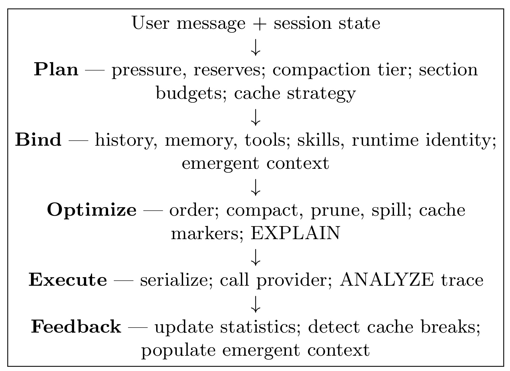
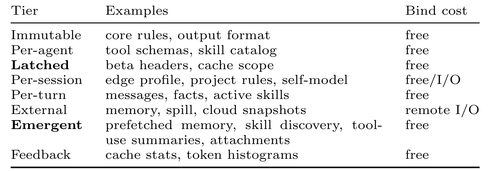
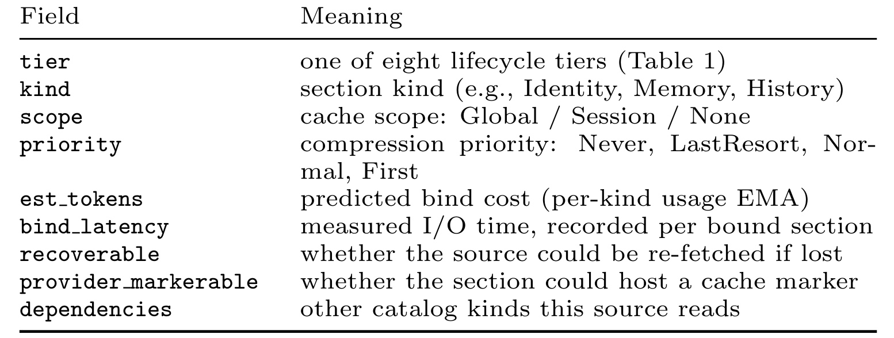
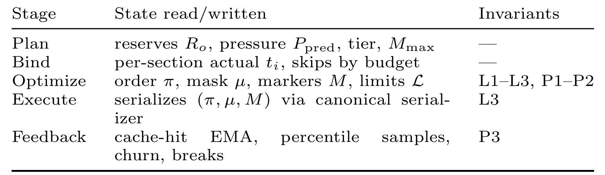
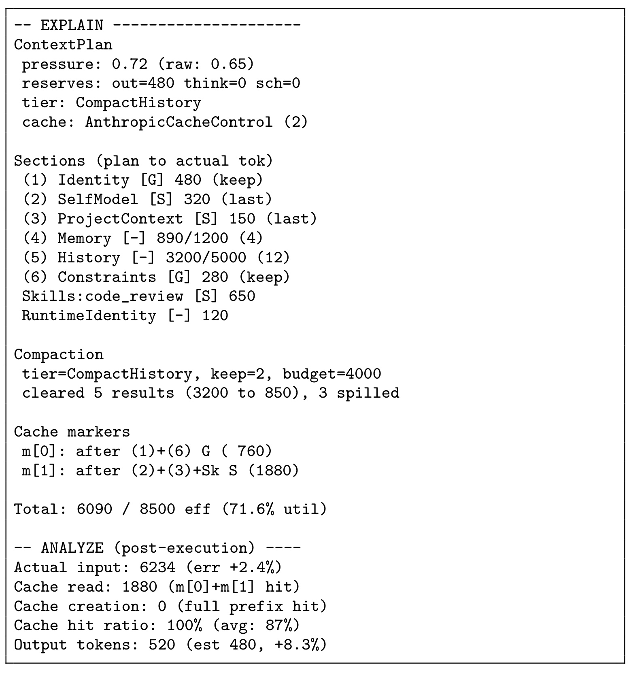
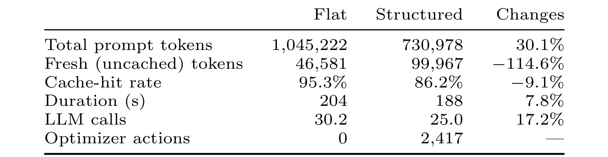
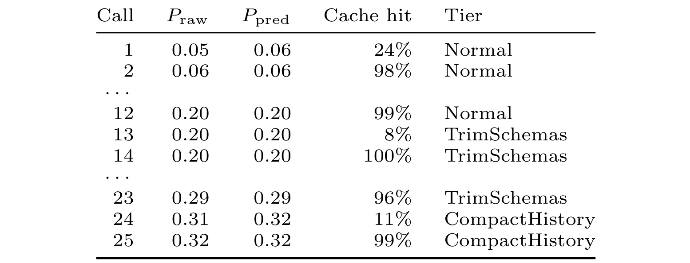

ContextPipe：受数据库启发的长程智能体上下文装配
ContextPipe 研究的不是怎样训练一个更强的 Agent 模型，而是每次调用模型之前，运行时究竟怎样把 system prompt、工具 schema、历史消息、记忆、技能说明与附件装配成一份请求。论文作者为 Peng Xu、Zuyu Zhang、Yuze Sun、Feng Tian、Long Wang、Chen Zhang，一作主机构为 MatrixOrigin，合作机构包括清华大学；论文于 2026 年 9 月 1 日公开，文中采用 VLDB 2026 ADS Workshop 的引用格式。论文入口为 arXiv:2609.00749。本轮未核验到独立的 ContextPipe 官方代码仓库；PDF 中出现的 GitHub 资源均属于引用工作，而不是本文实现。
长程 Agent 每一轮都必须在硬上下文窗口和按字节匹配的前缀缓存条件下，决定保留什么、怎样排序、何时压缩以及哪些内容延后；生产系统却常把这些决定散落在 prompt builder、临时压缩逻辑、cache-break workaround 和不同 provider 的适配层里，因而无法解释一次上下文为什么这样组成，也难以可靠回放与定位缓存失效。
1. 背景和问题
一个工具型 Agent 的表面流程很简单：接收用户消息，拼出 prompt，调用模型，解析可能的工具调用，执行工具，再把结果放进下一轮。但任务一旦跨越几十轮，prompt 就不再是“把聊天记录追加到末尾”这么单纯。一次请求至少可能同时包含全局行为规范、当前项目约束、工具定义、历史对话、检索记忆、运行时身份、动态发现的技能，以及体积很大的工具结果。模型窗口是硬上限，供应商又按 token 和缓存命中情况计费，运行时必须持续做选择：哪些内容绝不能丢，哪些可以裁剪，哪些适合摘要，哪些可以 spill 到外部存储，哪些应放在稳定前缀里。这个选择不是一次性的；每个 turn 都要根据新历史、新工具结果和前一轮统计重新执行。
现有工程实现的问题首先是职责分散。session prompt builder 可能负责顺序，history compactor 负责摘要，工具层自行插入 attachment，provider shim 又决定 cache marker。每个局部模块看起来合理，合在一起却没有一份统一“物理计划”：没有 catalog 描述每种上下文的生命周期、预计 token 与可恢复性，没有同一个策略联合考虑预算和缓存，也没有 trace 说明某次 schema 为什么被裁、某个工具结果为何被清空。出了问题时，工程师只能从最终请求倒推多个组件的隐含决定，很难回答“如果不压缩会多花多少”“此次 cache break 是 tool schema 变了还是 session header 变了”。
第二个矛盾来自前缀缓存的字节稳定性。论文假设自动前缀缓存复用与上一次请求相同的最长 byte-identical prefix：在稳定前缀后追加内容通常便宜，但稳定区中间只要改变一个字节，其后的 KV 计算就可能全部失效。于是“压缩越多 token 越省”并不总成立。若压缩发生在缓存前缀内，虽然发送的总上下文变短，fresh token 反而可能增加；不同 provider 对 cached token 的折扣又不同，账单方向可能翻转。更麻烦的是，beta header、provider feature flag 这类配置如果在会话中途切换，也会无声破坏缓存身份。ContextPipe 因此没有把缓存当作序列化后的附属优化，而是把 cache scope、marker 能力和 latch 状态纳入规划输入。
第三个矛盾是顺序同时影响成本与模型质量。较稳定的内容放在前面可以扩大可缓存前缀，但长上下文模型对位置并非均匀敏感，中间信息常比开头和结尾更难被使用。把易变记忆放到后部也许保护了缓存，却可能改变模型是否注意到它。论文并没有声称已得到“每 token 信息价值”的精确函数；相反，作者承认这类 utility 难以量化，所以选择固定、可解释、能回放的启发式，而不是搜索一个看似最优却难审计的顺序。这使 ContextPipe 的目标更接近数据库执行器的纪律：先把意图、catalog、资源预算、物理变换和实际反馈显式化，再逐步改进代价模型。
数据库类比具体对应四组结构。用户本轮意图类似声明式查询；session state 与可用信息源类似 catalog；上下文窗口类似内存/I/O 预算；prompt cache 类似分层缓存。数据库优化器会根据统计选择物理计划，并用 EXPLAIN ANALYZE 展示估计与实际执行，ContextPipe 也把一个 LLM turn 分成可测的阶段，并要求每个 applied 或 skipped transform 都进入 trace。这里的真正贡献不是把 prompt 换一个名字，而是试图给上下文装配建立单一入口、类型化中间表示、显式安全不变量和跨轮统计反馈。
这个抽象还澄清了 ContextPipe 与 RAG、长上下文模型和记忆系统的分工。RAG 决定“能取回哪些候选信息”，长上下文模型提高“最多能消费多少信息”，MemGPT 一类系统管理主上下文与外部存储的换页；ContextPipe 处理的是下一层组合问题：候选已经存在之后，怎样在本轮预算、缓存价格与 provider 约束下把它们变成一个有序 request。它不替代检索器，也不学习内容价值函数。若检索结果本身错误，优化器只能更规范地装配错误信息；若摘要器抹去关键细节，trace 能指出发生过摘要，却不能自动恢复语义。论文把 recoverability、spill reference 和 skipped transform 显式化，正是为了让这些风险有可追踪的位置。
从故障角度看，扁平追加至少会形成三类恶性循环。其一，prompt-too-long 发生后才被动删除，重试本身增加时延，若删除规则不稳定还会连续触发 recovery loop。其二，工具结果体积远大于普通消息，按 round 粗暴删除可能连带丢失仍需引用的 call/result 配对，导致请求在 provider 层非法。其三，压缩器本身又调用 LLM 时，摘要调用也需要上下文；若它走旁路 builder，就可能在主任务最接近窗口上限时再次 overflow。ContextPipe 要求所有子调用走同一管线，并把系统消息、Never priority、最大清除量与 fail-open rehydration 固定成 gate，从结构上缩小这种级联故障的传播面。
还有一个容易忽略的目标是测试性。传统 prompt builder 往往依赖活跃 session、网络记忆服务和 provider SDK，想复现一轮必须搭起整套在线环境。ContextPipe 把 Plan 定义成 catalog snapshot 上的纯函数，把 Bind 限定为唯一外部 I/O 阶段，把 canonical serialization 放到 Execute 边界；因此可以保存 snapshot、policy 和 limits，在离线环境重放同一个 plan。确定性并不保证选择最聪明，但它让差异可以比较：若两次输出不再 byte-identical，工程师能检查是统计 snapshot、latch、provider policy 还是 serializer 版本发生变化。
与此同时，ContextPipe 暂时回避了最难的“信息价值”估计。compression priority 由 catalog 预先给定，ascending-volatility sort 优先保护缓存，却没有根据当前问题判断一段 memory 是否对答案至关重要；summarization、drop 和 spill 的语义损失也没有统一度量。数据库行数和 I/O 代价可以近似统计，prompt 中某段话对模型决策的边际贡献却难以观测。固定策略因此更容易审计，却可能稳定地做出质量较差的选择。真正成熟的实现需要把 task success、关键约束保留率、工具调用正确率与 cache/token 统计联结起来，而不是只让 Feedback 学习长度和命中率。
这项工作与推荐系统也有直接关系。在线推荐或广告系统中的 Agent 可能同时读取用户长期兴趣、当前会话、候选解释、工具 schema 与策略约束；信息更新频率不同、可丢弃性不同、缓存价值也不同。若仍把它们当成一个字符串追加，容易在长会话中让工具回执和候选细节挤掉稳定约束。ContextPipe 的 catalog 与 scope 思路可以迁移到“用户稳定画像—会话兴趣—本次候选—实时反馈”的分层装配。不过论文评估只覆盖软件工程 Agent，尚未证明这种排序和压缩在推荐质量、个性化一致性或策略安全上同样有效。
2. 方法
2.1 五阶段执行模型：一次调用只有一条管线
ContextPipe 规定所有模型调用——包括正常 turn、skill run、subrun 和 forked child——都经过 Plan → Bind → Optimize → Execute → Feedback。Plan 只读取 catalog snapshot 与既有统计，输出压缩档位、section 预算和 cache strategy，不做外部 I/O；Bind 才并发加载 history、memory、tool schema、skill 与上一轮 emergent items，并把它们转成类型化 artifact；Optimize 在预算和变换 gate 下排序、压缩、spill、放置 marker；Execute 是唯一能联系 provider 的阶段；Feedback 在成功响应后记录 token、cache 与截断结果。单一路径的价值在于：任何真正发出的 request 都必须拥有同源 plan 和 trace，不能再由旁路 prompt builder 绕开优化器。
Plan 的核心量是原始压力与预测压力：
符号解释：$T_{\mathrm{used}}$ 是当前已用输入 token，$L_{\mathrm{eff}}$ 是模型有效输入上限；$R_o$、$R_t$、$R_s$ 分别预留预期输出、extended thinking 与 tool-schema growth。当前实现主要从按“模型、query source”分桶的历史完成长度估计 $R_o$：稳定期用 p75，刚发生恢复事件时用 p95；$R_t$ 和 $R_s$ 仍是类型化占位，默认值为零。预测压力只能把压缩档位升级，不能比原始压力选择更松的档位，因此长尾输出估计不会导致来回振荡。

Figure 1 要从“副作用所有权”来读，而不只是五个方框。用户消息和 session state 先进入 Plan，得到 pressure、reserve、section budget 与 cache strategy；Bind 才触碰磁盘或网络，把计划中的引用解析成具体内容；Optimize 只处理已绑定的 typed artifacts，并同时生成 EXPLAIN；Execute 将规范化结果序列化并调用 provider；Feedback 把实际 token、cache break 与 emergent context 交给下一轮。图中没有第二条 payload builder 路径，意味着压缩子调用和 child agent 也不能自行拼 request。这个约束让 EXPLAIN-only 成为真正无副作用的预演：停在 Execute 前即可检查“将要发送什么”，而不会先调用模型或污染统计。
2.2 确定性优化器：压力分级、缓存排序与 spill
Bind 输出 section 集合 $S=\{s_1,\ldots,s_n\}$；每个 $s_i$ 带预计 token 成本 $t_i$、cache scope $c_i\in\{Global,Session,None\}$ 与压缩优先级 $p_i\in\{First,Normal,LastResort,Never\}$。优化器决定 section 顺序 $\pi$、保留 mask $\mu$ 和 marker 位置集合 $M$，但必须满足硬约束：
符号解释：$B$ 是扣除 reserve 后的有效输入预算；$\mu_i=1$ 表示保留 section；$M_{\max}$ 由 provider policy 给出。除此之外，Identity 与 Constraints 是固定 anchor，不能被重排越过或删除；tool-call 与 tool-result 必须邻接移动，防止 provider 拒绝孤立结果。带 precedence 的 knapsack 本身已是 NP-hard，再加顺序敏感 cache 代价更复杂，所以作者没有求 utility 最优解，而采用固定的 ascending-volatility stable sort。
论文把压力写成更一般的形式：
符号解释：$T$ 为当前输入 token，$L$ 为有效窗口，$R$ 为三类 reserve 之和。$P<0.60$ 为 Normal；$0.60\le P<0.75$ 进入 TrimSchemas；$0.75\le P<0.90$ 进入 CompactHistory；$P\ge0.90$ 进入 AggressivePrune。TrimSchemas 裁掉预计不用的工具定义；CompactHistory 优先清除最旧 tool result，以 provider 合法占位符替代，并受“本轮最多清多少 token”的 circuit breaker 限制；AggressivePrune 才删除最旧完整 round，而且至少存在四个可删 round 才启动。每一步还要过 OptimizeLimits 的独立 gate，关闭时不静默跳过，而是记录 skipped optimization 与原因。
缓存排序把 Global、Session、None 按波动性从低到高稳定排列，Identity 与 Constraints 仍固定在前部；若新旧顺序差异超过 max-reorder-moves，就保留旧顺序并记入 trace。marker 放在 scope 边界，但 prefix-only provider 不放 marker；若 SessionLatch 本轮刚翻转，None-scope marker 会被抑制，避免把刚变化的内容错误缓存。单 section 达到 10,000 token 且有后端时可以 spill，Identity、Constraints、WorkingMemory 永不 spill；后端读回失败时用可诊断占位而非让整个 turn 崩溃。Algorithm 1 的排序复杂度为 $O(n\log n)$，其余压缩、marking 与序列化为 $O(n)$；作者称常见 $n\le30$，因此优化器开销相对一次 LLM call 很小。
安全性来自三个不变量和三个运行性质：anchor/precedence 不被破坏，Never section 不丢，工具调用配对且 spill 可恢复；每个 applied/skipped transform 都完整记录，给定相同 snapshot 与 policy 会产生 byte-identical request 和 trace，失败 Execute 不写正常 usage sample、也不推进下一轮 emergent queue。这些是由固定流程直接推出的测试规格，不是经大规模形式化验证得到的定理；一旦真实 serializer 或 provider adapter 绕开契约，论文中的性质就不再自动成立。
2.3 ContextSources：生命周期 catalog 与跨轮状态
ContextSources 不把所有 session state 塞进一个巨大 struct，而按变化频率和位置分为八个 tier。Plan 先从 snapshot 枚举来源与预计代价，只为选中的记录生成 bind 请求；Bind 再并发执行实际 I/O。这样“是否需要某项记忆”和“去哪里取、取了多大”被拆开，类似数据库先看 catalog 再访问表，而不是一开始加载所有数据。

Table 1 的三列分别是 lifecycle tier、典型内容和 Bind cost。Immutable 放核心规则与输出格式，Per-agent 放 tool schema 和 skill catalog，Latched 放 beta header/cache scope；Per-session 包含 edge profile、项目规则与 self-model，可能触发 I/O；Per-turn 是消息、事实和 active skills；External 对接 memory、spill 与 cloud snapshot，是明确的 remote I/O；Emergent 保存刚发现的技能、预取记忆、工具摘要和附件；Feedback 保存 cache statistics 与 token histogram。粗体 Latched 和 Emergent 是作者重点新增的两层：前者冻结会话中不应漂移的 cache-key 因子，后者承接 Plan 之后才出现、只能下一轮消费的信息。

Table 2 进一步说明分类不是文档约定，而是每条 source record 的机器可读 schema。tier 说明生命周期，kind 区分 Identity、Memory、History 等 section 类型，scope 决定 Global/Session/None 的排序位置，priority 决定 First 到 Never 的压缩次序；est_tokens 来自 per-kind usage EMA，bind_latency 记录真实 I/O，recoverable 决定丢失后能否重新取，provider_markerable 决定能否承载 cache marker，dependencies 列出所读的其他 catalog kind。只有这些字段显式存在，Plan 才能在未执行 I/O 前做预算，Optimize 才能知道压缩风险，Feedback 才能把估计误差归还到正确来源。SessionLatch 第一次触发后在会话内冻结，适用于 beta header、cache eligibility 和 provider flag；若中途重新计算，prefix hash 会变化，之前的 KV 复用失效。EmergentContext 则解决相反问题：工具执行后才发现 skill 或 attachment，当前 Plan 已结束，不能安全塞回正在执行的 request，于是写入队列供下一轮 Bind 消费。每条 emergent item 带默认只活一个 turn 的 TTL、写入时去重的 content hash 和列表容量上限，防止 resume/replay 重复注入旧附件。PipelineStats 中 response sample 的精确排序 digest 上限为 512；cache-hit EMA 更新系数 $\lambda=0.1$，per-section token EMA 为 $\alpha=0.3$，cache break 与 compaction event 放进 64 项 ring buffer。统计在 Plan 时只读、Feedback 时才写，形成 turn-level serializability。

Table 3 把五阶段与状态读写对齐：Plan 读取 reserve、预测压力、tier 与 marker 上限；Bind 把每 section 的估计 $t_i$ 变成实际 token，并记录预算导致的 skip；Optimize 产生 $\pi$、$\mu$、$M$ 和 limit 决策，承担 L1-L3 与 P1-P2；Execute 只通过 canonical serializer 输出三元组，并再次守住配对性质 L3；Feedback 最后更新 cache-hit EMA、percentile samples、churn 与 break，承担失败隔离 P3。因为阶段间状态集合明确，单测可以用合成 snapshot 驱动任一阶段；也因为 Feedback 在并发 Bind 之后才写，绑定 fan-out 不会边读边改同一统计对象。
2.4 EXPLAIN ANALYZE、实现边界与 ForkPrefix
EXPLAIN 在调用前列出 raw/predicted pressure、reserve、tier、计划/实际 section token、compaction、spill、marker 与预算利用率；ANALYZE 在成功后补 actual input/output、cache read/create 和估计误差。八条 alert 检测显式 cache break、非首轮 cold start、移动窗口 hit regression、超过 20% 的 predictive miss、compaction cascade、recovery loop、单轮 pressure spike 与 emergent-list overflow。stage-boundary mismatch 不算普通 alert，而是在 Execute 前作为验证事件；shadow mode 下会阻断 dispatch，避免 optimizer 做了决定却被后续 serializer 静默忽略。

Figure 2 给出一次 CompactHistory turn。EXPLAIN 显示预测压力 0.72、原始压力 0.65，输出 reserve 为 480；section 列表同时展示 scope 标签和 plan/actual token，随后记录清除 5 个结果、从 3200 token 降至 850，并 spill 3 个对象。两个 marker 分别覆盖 Global 与 Session 稳定区，最终使用 6090/8500 token。ANALYZE 再把实际输入 6234、估计误差 +2.4%、cache read 1880、cache hit 100% 和输出 520 写回。这种 trace 的关键不是漂亮日志，而是每个压缩与 marker 都能回指输入和 gate，事后可以重放同一个 snapshot 判断 request 是否 byte-identical。
实现层采用 typed artifacts 而不是 String：MessageArtifact 保留 role 与 tool-call id，ToolSchemaArtifact 带稳定 hash，SpillReference 带 tool-call id、字节数与磁盘路径；只允许 Execute 边界的一套 serializer 转成 provider wire format。ForkPrefix 把同一思想扩到 parent-child Agent：spawn 时冻结父 Agent 可缓存 prefix 的 canonical bytes、逐工具 schema SHA-256、thinking config、provider/model 和排序后的 beta headers，再对整体做 SHA-256 身份校验。设计上 child 可以复用共享前缀并选择 skip-cache-write，减少每个子 Agent 的首次 cache miss。
但 ForkPrefix 目前有明确缺口：默认 server executor 还没有接入 child-side consumption，delegated child 实际仍 fresh start；现阶段完成的是 snapshot 捕获、验证和 probe 设计，不能写成已实现端到端 cache sharing。ContextPipe 对版本上线也采用 shadow-only、shadow-verified、flip、retire 四步：新旧装配路径先并跑，比较 system block hash、tool schema hash、消息角色序列、marker 和 token estimate，连续零 diff 后才切流。这个过程比直接 feature flag 更保守，也更符合论文强调的“可审计变更”目标。
3. 实验结果
3.1 数据、对照与评测口径
论文使用 DeepSeek-V4-Pro，在 SWE-bench Pro 的 Qutebrowser 子集上做初步评估。该子集共有 79 个实例，作者只选了其中 3 个；每个 condition 对每个实例重复 3 次，Flat 与 Structured 采用 interleaved matched pairs，因此每个条件只有九次 run。任务需要在给定修复前代码库上处理 bug report，并由测试判断 patch；作者说明质量指标是 resolve rate，且通过 patch 可应用、测试完整运行、不得修改测试文件等 validity gate。但正文和 Table 4 没有给出 resolve-rate 数字，所以无法从公开表格判断两种策略是否在同等任务成功率下比较，也不能把 token/时延下降自动解释成质量无损。
Flat 并非完全不同的旧系统：两组都共享 planner 并计算 tier，但 Flat 关闭全部 optimizer gate，保持稳定绑定顺序，不做 prune、compaction 或 spill；Structured 才真正执行 ContextPipe。这个对照能隔离“是否执行优化动作”的总体效果，却没有拆开预测压力、latch、emergent guard 或 marker policy 的单项贡献。指标包括 prompt/completion token、provider-normalized fresh/miss 与 cache-read token、API call 数、wall-clock duration，以及逐调用 tier、schema prune、message compaction、spill 与 cache hit。跨 provider cache counters 只被视为可比较诊断量，不是统一会计恒等式。
这里还存在任务长度的选择效应。作者特意挑选会触碰多个文件、容易把 history 和 tool result 推高的 Qutebrowser 实例，以同时压测窗口、缓存和 compaction ladder；这适合证明机制会被触发，却未必代表短对话或只读问答的平均 workload。Flat 在这种长任务中更容易持续积累上下文，Structured 的 window headroom 优势也会被放大。要外推到普通 Agent 流量，至少应按 turn 数、工具结果体积、schema 数量和 cache prefix 稳定性分层报告，而不能只用九次运行的总体均值。
质量结果缺失会直接影响因果解释。若 Structured 因压缩后更早结束或少走工具步骤而降低 calls 和 duration，这可能是效率改善，也可能是任务未完成；只有同时给出每个 instance 的 resolve、validity gate、turn 数和终止原因才能区分。论文称 Qutebrowser 子集具备抗污染和长程特征，但没有列出三个被选实例、issue 难度或 Flat/Structured 的逐实例结果，读者无法判断是否某一个极长 run 主导均值。更稳健的呈现应把九对 matched runs 全部公开，并以 paired difference 而非只看两组汇总均值。
3.2 总体结果：总量下降，但缓存代价反向

Table 4 的 per-cell mean 显示，Structured 将 total prompt tokens 从 1,045,222 降到 730,978，表中变化为 30.1%；duration 从 204 秒降到 188 秒，对应 7.8%；LLM calls 从 30.2 降到 25.0，对应 17.2%。代价同样醒目：fresh uncached tokens 从 46,581 增至 99,967，表中变化写为 -114.6%，即未缓存输入超过翻倍；cache-hit rate 从 95.3% 降到 86.2%。Structured 记录了 2,417 次 optimizer actions，Flat 为零。它证明分级处理确实缩小发送总量和调用时长，却也说明每次 compaction 改变 prefix，会把一部分原本廉价的 cache read 变成 fresh computation。
摘要将收益概括为 total token volume -31%、LLM calls -23%、response time -9%；Section 7 正文又写 total tokens 约 -30%、repeated cache reads -39%、completion tokens -23.5%、LLM calls -23.1%、response time -8.7%。这些数字与 Table 4 的 30.1%、17.2%、7.8% 并非逐项一致，公开文本没有完整说明摘要/正文和 per-cell mean 表格是否使用不同聚合对象或分母。因此最稳妥的结论是方向一致：总上下文、调用和时延下降，fresh token 上升且 hit rate 下降；精确百分比必须随所在表或段落标注，不能把摘要数字直接当成 Table 4 的同口径结果。
作者进一步用 provider 的缓存折扣解释为何“token 少”不等于“账单少”：
符号解释：$r$ 是 cached token 相对 fresh token 的价格比，$E(r)$ 是按 fresh-token 单价归一化的计费成本，$r^{*}$ 是 Flat 与 Structured 的 break-even。按论文计算，DeepSeek-like 的 $r\approx0.1$ 时，Flat 虽发送约 43% 更多总上下文，账单反而约低 11%；当 $r=0.25$，Structured 才约低 13%。所以 ContextPipe 当前更确定的收益是 window headroom、总 token、调用数和响应时间，而不是对所有 provider 无条件省钱。工程部署前必须把真实 cache pricing、prefix break 频率和吞吐约束一起带入。
Eq.3 的模型本身也很简化。它把 fresh 与 cached token 线性加权，没有计入不同长度请求的排队效应、prefix cache 写入费、跨区域网络、并发批处理效率、summary 子调用的峰值延迟或模型输出价格。Table 4 的 duration 是 wall-clock 均值，却没有 P50/P95/P99；生产系统更关心 compaction 当轮是否形成尾延迟尖峰，以及更少的 LLM calls 能否抵消一次更重的 Bind/summary。因而 $r^{*}=0.145$ 只能作为这批 run 的局部 break-even，不是可跨模型、跨 provider 直接复用的常数。
3.3 逐调用 trace：收益如何造成 cache break

Table 5 选取 Structured 条件中最高压力实例的第一次重复。call 1 是 24% hit 的冷启动；call 2 恢复到 98%，call 12 仍为 99%。call 13 首次跨入 TrimSchemas，schema pruning 改变前缀字节，cache hit 立刻跌到 8%；call 14 随即回到 100%，之后到 call 23 仍为 96%。call 24 跨入 CompactHistory 时再次降到 11%，call 25 又恢复 99%。与此同时 $P_{\mathrm{raw}}$ 从 0.05 增到 0.32，作者称此后直到 session 结束都被控制在 0.33 左右。这个案例支持“低谷可归因”：cache break 不是随机网络现象，而与具体 tier crossing 同步，并能由 trace 指出是哪次 schema/history 变换造成。
Flat 的同实例在冷启动后保持约 77%-100% hit，却让 pressure 单调上升直至达到 max-turn limit。Structured 因而是在“偶发单轮 break”和“长期窗口压力”之间换取平衡，而不是同时优化所有指标。Table 5 只展示一条最高压力轨迹，无法证明所有 instance 都会在一次调用后恢复，也没有 tail latency、峰值显存或并发吞吐分布。若生产 workload 的 prompt prefix 改动频繁、会话较短，反复 break 可能来不及摊薄；若任务很长且 tool result 快速膨胀，window headroom 的价值会更高。
从机制上看，call 13 时 $P_{\mathrm{raw}}$ 与 $P_{\mathrm{pred}}$ 都只有 0.20，却已显示 TrimSchemas；按 Section 3.3 的固定阈值，0.20 理应属于 Normal。论文没有在表旁解释这个差异是否来自 RecoveryState、不同有效预算、表中压力的归一化口径，或运行版本与文中阈值不一致。call 24 的 0.31/0.32 同样低于 0.75，却进入 CompactHistory。它不否定 trace 的归因能力，但说明复现时必须把 tier selector 的真实配置、恢复状态和 trace schema 一起开放；仅凭打印出的 pressure 数字无法重算 tier。这个内部一致性问题应列为审计重点，而不是用平均收益掩盖。
3.4 尚未回答的机制与外推问题
论文把 Structured-vs-Flat 称为计划中机制消融的第一项，其余四项仍开放：A1 比较 predictive 与 reactive pressure，但当前 workload 两者最多只差窗口的 1.7%，很难跨过 tier threshold；A2 检查 SessionLatches 相对每轮重算的价值；A3 检查 EmergentContext 的 TTL、dedup、cap 相对 append-only；A4 检查 ProviderCachePolicy 相对固定 marker。由于这些消融尚未完成，不能知道 30% 左右的总 token 降幅主要来自 schema pruning、history clearing、spill、ordered placement 还是某种组合。
A1 的难点尤其值得注意：若 $P_{\mathrm{pred}}-P_{\mathrm{raw}}$ 很少跨档位，p75/p95 reserve 即使估计更准确，也不会改变动作；要证明预测式压力有价值，应构造接近 0.60、0.75 和 0.90 的边界 workload，分别比较提前压缩是否减少 prompt-too-long、额外 fresh token 与恢复重试。A2 应主动翻转 header 或 feature flag，测量 latch 是否保持 prefix identity。A3 需要重复 resume/replay，统计过期和重复 emergent item。A4 则应在相同请求字节下对比 prefix-only、显式 marker 和 provider-specific policy，避免把供应商实现差异归到 ContextPipe 本身。
除了均值，还需要核对 optimizer action 的语义。Table 4 给出 Structured 平均或汇总为 2,417 actions，却未说明一次 action 是删一个 schema、清一个 tool result、移动一个 section，还是一条 applied/skipped trace record；若 skipped 也计数，高 action 数不等于进行了同等数量的破坏性变换。论文声称 circuit breaker 限制单轮清除 token、drop 至少要求四个 round、spilling 只针对不受保护的大 section，但没有按动作类型给出分布。因此不能从 2,417 推断实现开销或内容损失，需要原始 trace 才能分辨。
统计不确定性也没有呈现。三实例、三重复意味着 duration、calls 和 token 的方差可能很大，Table 4 没有标准差、置信区间、显著性检验或 paired difference 分布；“204 秒到 188 秒”究竟是稳定的约 8% 改善，还是由个别网络/模型延迟造成，公开数据不足以判断。cache hit 是比例指标，还需要说明按 token 加权、按 call 平均还是先按 cell 求均值；正文提到 per-cell median 95.6%→86.3%，表中则是 95.3%→86.2%，两者统计量不同。复现报告应并列 token-weighted hit、call-level median 和 session-level distribution，避免单一均值隐藏 compaction 当轮的尖峰。
内容保真同样缺少独立测量。Structured 会 prune schema、清空 tool result、drop round 或 summary history，但实验没有报告被清除内容的类型、之后是否发生 rehydration、模型是否因信息缺失重复调用工具，以及 protected section 是否始终保留。作者提出 audit completeness 与 failure isolation，主要是实现性质；要证明这些性质在真实运行中成立，应对 trace 做自动一致性检查，并故意注入 serializer mismatch、spill backend failure、prompt-too-long 和 latch flip。没有故障注入时，“失败会被隔离”更多来自设计推理而非实验覆盖。
最后，论文没有与 MemGPT、PEEK 或生产 Agent framework 的具体 compaction policy 做 matched baseline。Flat 只说明“全部 gate 关闭”，能测 ContextPipe 内部开关的总体增量，却不能回答固定窗口摘要、检索式 memory、简单保留最近 $k$ 轮或 cache-aware 手工规则能否取得相近收益。更有说服力的基线应在相同模型、工具、最大 turn、retry 和 token budget 下运行，并统一计算 fresh/cache-read、任务成功与总时延。若简单策略已能达到大部分收益，ContextPipe 的主要优势会落在 trace 与治理；若只有结构化 catalog 能稳定避免 overflow，才说明优化机制本身不可替代。
评测还应覆盖不同内容形态。代码修复中的 tool result 多为日志和 diff，适合清除、spill 或重新读取；浏览器 Agent 的页面快照、多模态附件、带时效性的搜索结果则可能不可稳定重建，recoverable 标记和压缩风险会不同。推荐 Agent 中的曝光约束或安全策略一旦被摘要误删，影响也远高于普通历史消息。按 artifact kind 分层报告丢弃率、重取率和任务损失，才能判断 catalog 的 priority 是否真正反映业务风险。
样本量是最强限制：仅 3/79 个 Qutebrowser instance、每项三次重复，既不足以覆盖不同代码库，也不足以做有把握的 non-inferiority 质量判断。模型只用 DeepSeek-V4-Pro，缓存协议与计价又是 provider-specific；论文明确把 counters 归一化为诊断量，但这不保证 Anthropic、OpenAI-compatible 或 Bedrock 策略获得相同收益。没有官方代码也使外部难以核对 2,417 个 optimizer actions 的计算单位、Flat 顺序细节和所有 retry policy。当前结果更像系统可行性与 trade-off 暴露，而不是普遍优于 append-only 的最终证据。
4. 总结
4.1 我的判断与可迁移价值
ContextPipe 最有价值的部分不是“数据库优化器”这个比喻，而是把上下文装配从隐式字符串拼接提升为有 catalog、有 typed artifact、有固定阶段、有安全不变量、有计划/实际 trace 的运行时接口。它没有假装能精确估计每段信息的 utility，而选择确定性排序和 gate，使同一 snapshot 可回放、cache break 可归因、失败不污染正常统计。对于需要长期运行、频繁调用工具并跨 provider 的 Agent，这种可运维性往往比一次 benchmark 的平均 token 降幅更重要。
对推荐系统，最可迁移的设计是把全局策略、用户长期画像、会话兴趣、候选上下文、实时工具结果分别声明 lifecycle、scope、priority 与 recoverability，再让装配器在严格时延和 token 预算下统一决策。离线可先用 EXPLAIN-only 比较新旧 request；线上则用 shadow diff、cache break attribution 和 section churn 作为 guardrail。更进一步，推荐 Agent 可以把候选级动态信息放在 None scope，把稳定政策和工具 schema 放在 Global/Session scope，但必须额外验证顺序变化是否影响个性化质量与安全约束的注意力位置。
落地时不宜直接照搬论文阈值。更合理的路径是先把现有 prompt builder 包装成 Flat catalog，只做 typed artifact、hash 和 trace，不改变发送字节；用 shadow-verified 阶段证明新 serializer 与旧请求完全一致后，再按 schema prune、tool-result clear、spill、ordered placement 的顺序逐项开 gate。每开一项都同时观察任务成功率、cache hit、fresh token、P99 与恢复次数。这样能保留 ContextPipe 的治理收益，也避免一次性引入多个无法归因的内容变换。
4.2 局限、复现重点与后续跟进
局限至少有五点。第一，评估只有三个实例，且没有公开 resolve-rate 数字，性能收益无法证明质量等价。第二，Table 4、Section 7 与摘要中的调用/时延百分比口径不完全一致，需要原始 run-level 数据澄清。第三，四个关键机制消融仍开放，无法做组件归因。第四，fresh token 翻倍与 cache-hit 下降会让低缓存折扣 provider 上的账单更差。第五，ForkPrefix 的 child-side consumption 尚未接入默认 executor，当前不能视为完成的多 Agent 缓存复用功能。另有代码未开放、provider cache 语义差异、摘要压缩可能丢细节等复现风险。
后续优先做三组验证。其一，复现 Structured/Flat 并保存每次 call 的原始 token、price、成功率、retry、tier 和 cache attribution，用 paired bootstrap 同时报告质量、成本和 tail latency；否则均值很难判断工程收益。其二，逐项完成 A1-A4，尤其在 pressure 靠近 0.60/0.75/0.90 阈值的合成 workload 上测试 predictive reserve 是否减少 recovery loop，并测试更细粒度 compaction 能否把一次大 break 分散成更小代价。其三，在推荐或广告 Agent 的真实上下文层级上跑 shadow pipeline，检查按 volatility 排序后离线 NDCG/行为一致性、在线策略合规和 cache cost 是否共同可接受。
总体而言，这是一篇值得当作“Agent runtime 可观测性与治理接口”阅读的系统论文，而不是已经证明普适最优的压缩算法。若作者后续开放实现、补齐 79 个 Qutebrowser 实例、更多仓库与 provider，并报告质量 non-inferiority、逐机制消融和 ForkPrefix 真实 child hit，ContextPipe 才能从有说服力的架构提案走向可比较、可复现的上下文执行层。
最后还应补上安全与隐私边界。EXPLAIN ANALYZE 若记录完整 section、工具结果、spill 路径和 cache-break hash，可能包含用户数据、项目秘密或可关联身份；可回放性越强，日志治理要求越高。生产实现应默认记录结构化计数和哈希，对正文做分级脱敏，限制 trace 与 spill 的保留时间和访问权限，并验证清除请求会同时覆盖统计、外部对象与 emergent queue。否则“可审计”可能把短暂 prompt 变成长久敏感资产。ContextPipe 的 catalog 正好提供实施这些策略的挂点，但论文尚未给出完整的安全模型。
因此，采用这项设计时应把“先建立可观测契约”放在“自动开启压缩”之前：先能解释，再逐项优化，最后才谈默认策略。